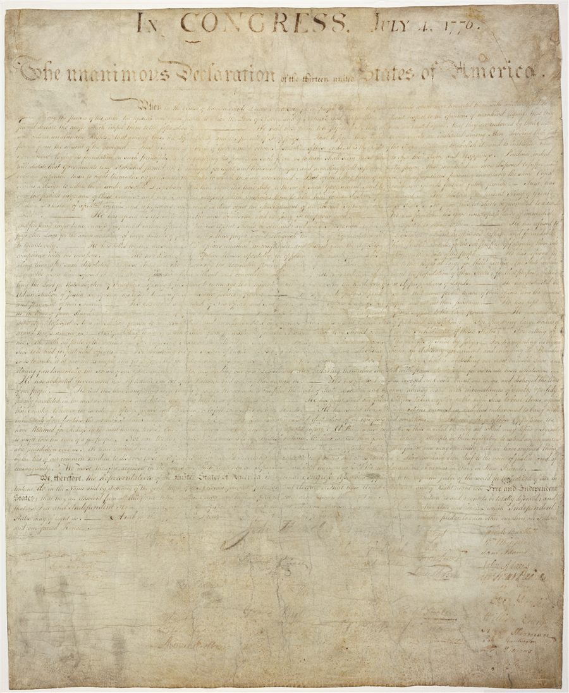
Declaration of Independence
Announced independence from Great Britain and named ideals of rights, equality, liberty, and government by consent.
Benefit today: language for liberty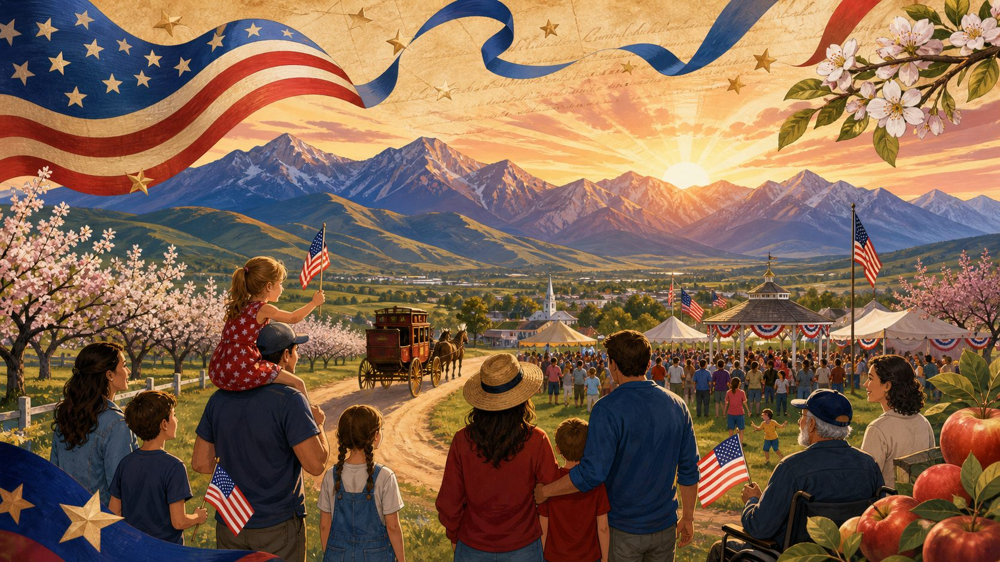
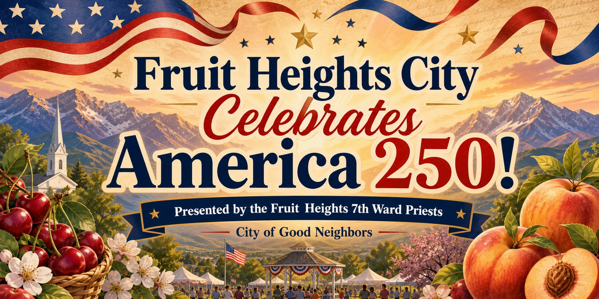
Scan, explore, and discover how America’s founding documents shaped rights, government, and the promise of liberty. After exploring the site, pass the quiz at the end with 70% or better to get a raffle ticket! Winners will be drawn at 6:20 and 7:20 for $10 you can use at a food truck!
Three documents that shaped the civic story

Announced independence from Great Britain and named ideals of rights, equality, liberty, and government by consent.
Benefit today: language for liberty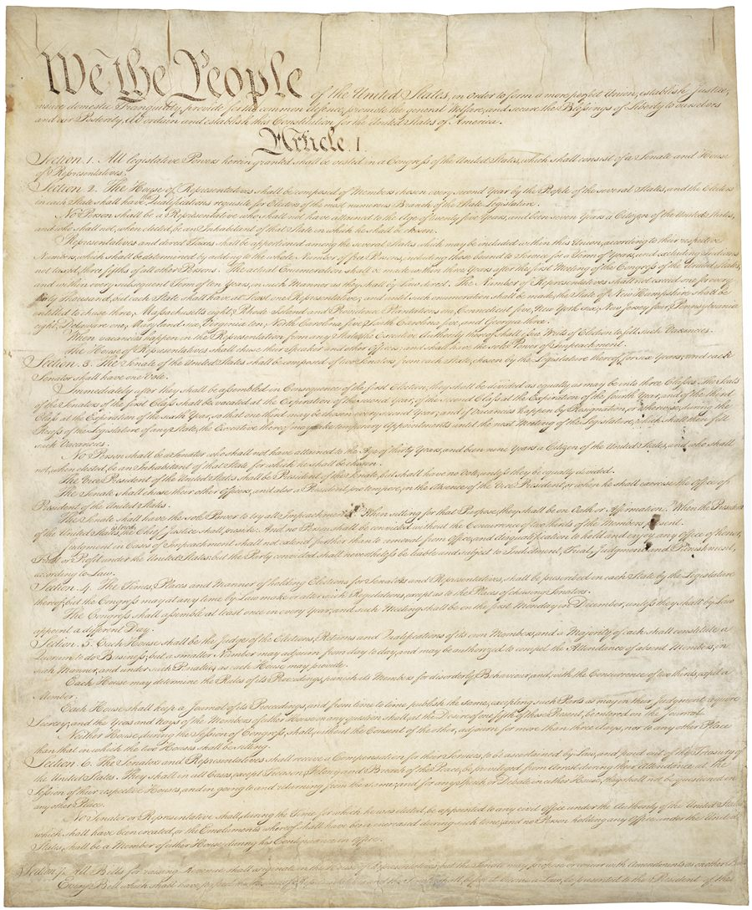
Created a durable framework for national government, including separation of powers, federalism, and rule of law.
Benefit today: a written rulebook
Added the first ten amendments, protecting core liberties and limiting government power.
Benefit today: protected freedomsBig promises. Everyday benefits.

People can speak, publish, worship, gather, and petition peacefully.
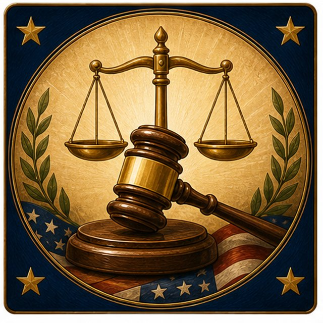
Government must follow rules before taking liberty or property.
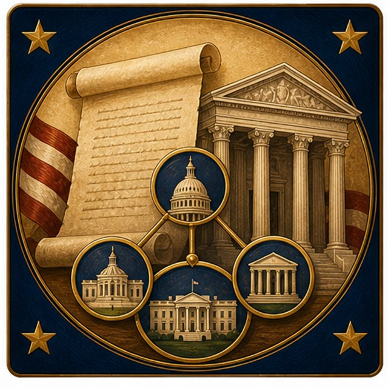
Power is divided, checked, and bound by a written Constitution.
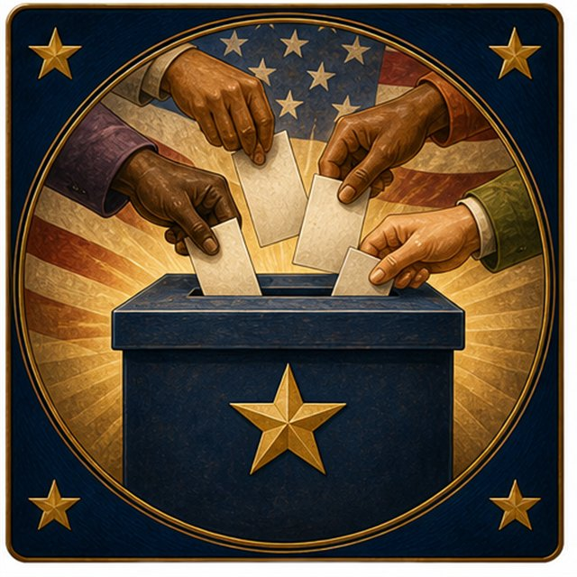
Amendments expanded who could participate in self-government.

The Constitution’s promises became tools for fuller liberty.

Citizens help keep constitutional government alive in every generation.
The National Archives calls the Declaration, Constitution, and Bill of Rights the “Charters of Freedom.”
Tap each phrase to see the idea in plain English
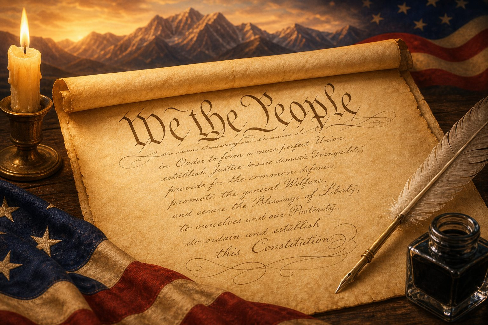
The first ten amendments
America Keeps Improving
Article V gives the United States a peaceful process for amendment. Later generations used that process to abolish slavery, define citizenship, protect equal protection, and expand voting rights.
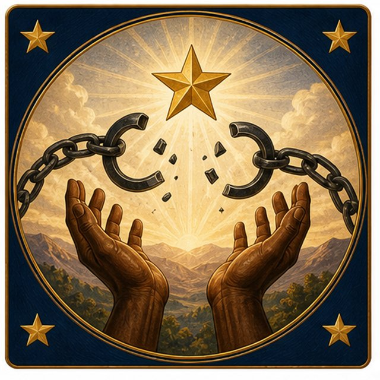
Abolished slavery.
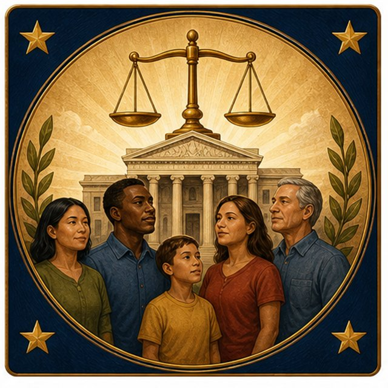
Citizenship, due process, and equal protection.
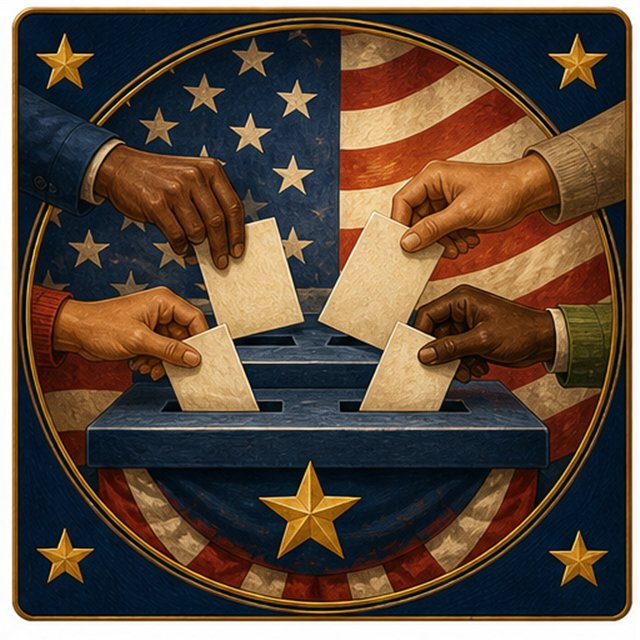
Voting rights regardless of race, color, or previous servitude.
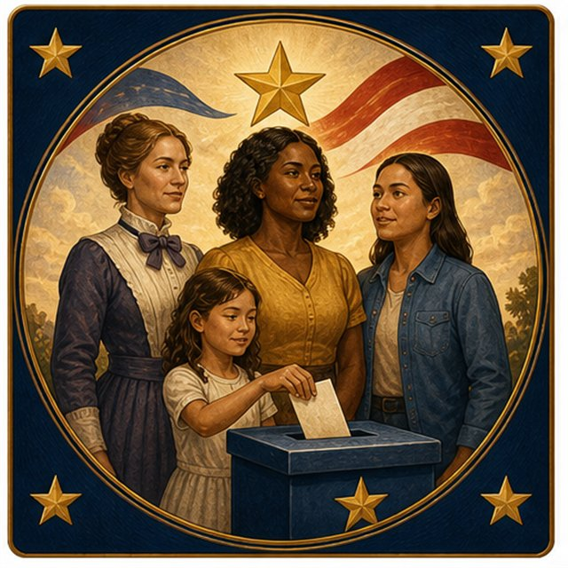
Women’s right to vote.
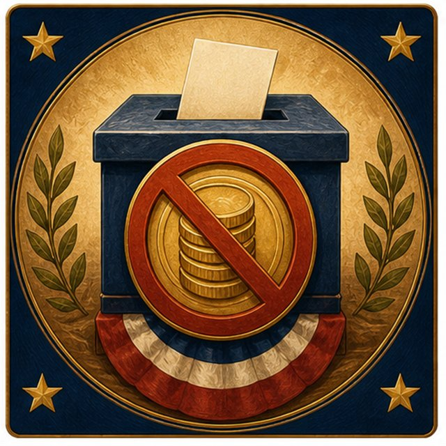
No poll taxes in federal elections.
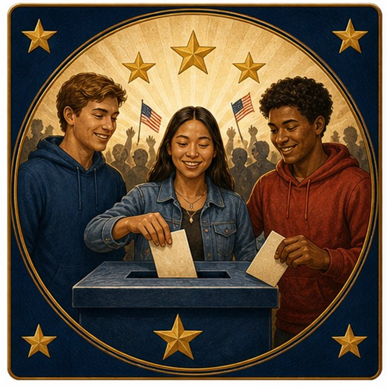
Voting age lowered to 18.
Heroes Of The Founding Documents
Some founders made extraordinary contributions while also living with contradictions, including slavery and exclusion. America’s founding documents created principles and processes that later generations used to expand liberty more fully.
Pass with a score of 70% to win a raffle ticket!
Sources & Credits
Original hero image, banner, section backgrounds, Preamble illustration, quiz background, benefit cards, Bill of Rights and amendment card images, and Heroes section headshots were generated with ChatGPT image generation; the live page uses optimized JPG copies for faster mobile loading. Founding document images are public-domain National Archives images credited to the National Archives.